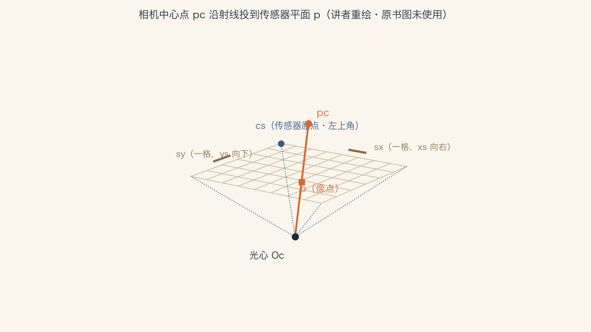
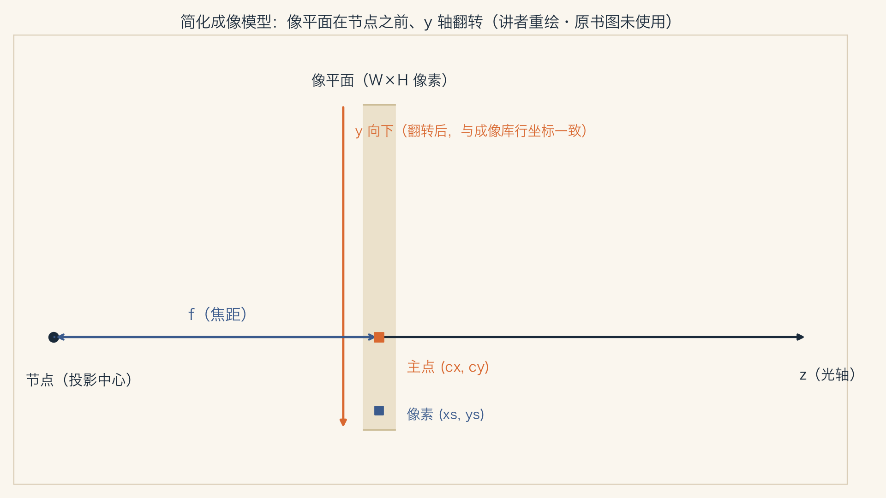
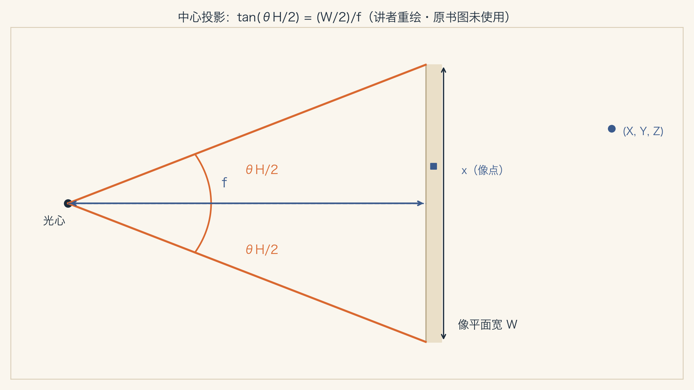
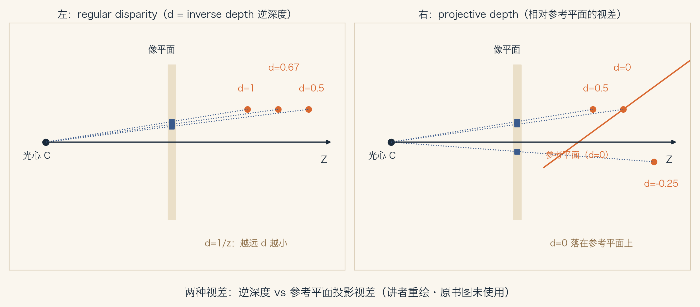
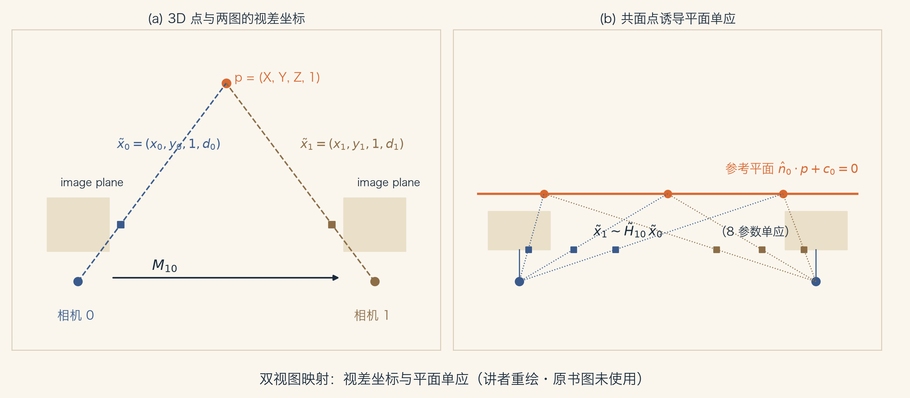

正课 · 08 · 第 2 章 图像形成
内参与外参：一台相机的「身份证」
三段路线（讲者安排）：① 像素怎么变成 3D 射线——传感器单应 Ms ② Ms 翻成标定矩阵 K，再合体成相机矩阵 P=K[R|t] ③ 焦距的三种单位 · 双视图映射 · 物体中心投影
讲者按：本集对应 §2.1.4「3D to 2D projections」后半（原书第 55–63 页，至 §2.1.5 之前）；上一集讲完「点投到像上哪儿」，这一集讲「像上坐标怎么变成像素」——内参是相机的「身份证」——固定焦距、固定对焦时出厂定死（变焦会改 K，本集第 62 页就会见到；调焦同理——讲者补充），外参是相机此刻的「摆位」
导览 · 兑现承诺
上集接过来的两件事 ，今天都办
E015 的切分
「讲者安排切分：内参矩阵留给 E016，镜头畸变留给 E017」今天吃到 §2.1.4 后半（第 55–63 页）；§2.1.5 Lens distortions（第 63 页起）留给 E017
视差的后续
已知深度/视差时，可用满秩 4×4 的逆直接映回 3D——式(2.64)上集推过 1−1/z 的视差换算（E015 f036 讲者推演）；今天补上可逆 4×4
讲者按：E016/E017 的切点在原书第 63 页内部（§2.1.5 小节标题起始处），不是原书小节边界——切分为讲者安排
内参 ① · 传感器几何
像素格子，怎么躺进 3D

讲者重绘 · 据原书 Figure 2.8（第 55 页）· 原书图未使用 图 2.8 三要素：光心 Oc （节点）、传感器平面原点 cs 、像素间距 (sx , sy )（固态传感器有时以微米 micron 计）——像素索引从左上角开始、往右往下（多数成像库的约定；原书提醒并非所有库都遵守，换坐标系调整直接，第 55 页）
内参 ① · 传感器单应
从像素到 3D：Ms
p = [Rs cs ]·[sx 0 0; 0 sy 0; 0 0 0; 0 0 1]·(xs , ys , 1)T = Ms ·x̄s （3×4 · 4×3）—— 式(2.53)，原书第 55 页
讲者按：4×3 矩阵第三行全 0——丢弃 Rs 第三列；第四行 (0 0 1)——齐次 1 原样乘到 cs ，故 Ms 第三列 = cs
Ms 列解释（第 55–56 页原文）：前两列 = 沿 xs /ys 方向单位步进对应的 3D 向量；第三列 = 图像阵列原点 cs
8 个未知数：Rs 三个 + cs 三个 + (sx , sy ) 两个——两轴间 skew 忽略（固态工艺可忽略，第 56 页）；实操只剩 7 个自由度：传感器距离与像素间距无法凭外部测量分开（第 56 页）
内参 ② · 标定矩阵
K 登场：相机的「身份证」
p = s·pc （同一射线，差一个未知缩放 s，原书第 56 页）；x̃s = α·Ms −1 ·pc = K·pc —— 式(2.54)，原书第 56 页
内参 intrinsics
标定矩阵 K 描述相机内参原书第 56 页：describes the camera intrinsics；「像素间距、传感器位姿、焦距与主点」为讲者归纳（下页起）
外参 extrinsics
相机在空间中的朝向与位置——就是 E015 讲的三维刚体变换 R, t原书第 56 页：the camera's orientation in space；「位置」对应式(2.55) 的平移 t（讲者补）
讲者比喻：内参是「机身出厂设定」，外参是「今天怎么摆」——固定焦距、固定对焦时，身份证不变、摆位天天变；变焦会改 K（见本集第 62 页；调焦同理——讲者补充）
内参 ② · 自由度谜题
7、8、5——K 的自由度之谜
理论上 7
Ms 的 8 参数减去「距离与间距不可分」原书第 56 页
实践中 8
直接假设一般 3×3 齐次矩阵（满维）原书第 56 页：most practitioners assume a general form
教科书 5
上三角形式——多视图几何标准做法Faugeras 1993; Hartley & Zisserman 2004; Faugeras & Luong 2001，原书第 56 页
为什么能砍到 5？——仅凭外部测量无法恢复完整 K ：标定时内外参一起估，x̃s = K[R t]pw = P·pw —— 式(2.55)；P = K[R|t] —— 式(2.56)（原书第 56 页）。K 右乘 R₁、[R|t] 左乘 R₁T ，仍是合法标定——传感器真实朝向与真实内参不可分
内参 ③ · 上三角形式
上三角 K：惯例的由来
从 P = K[R|t] 用 QR factorization 提取上三角 K（Golub & Van Loan 1996，原书第 57 页）；式(2.57)：K = [fx s cx ; 0 fy cy ; 0 0 1]（第 57 页）——fx /fy 独立焦距、s 轴间 skew、(cx , cy ) 图像中心
讲者按：原书写 QR factorization；这里要的是上三角 K 在左的形式，实务中通常称 RQ 分解——QR 的变体
式(2.58)：K = [f s cx ; 0 a·f cy ; 0 0 1]（第 57 页）——宽高比 a 显式、公共焦距 f
术语撞车（第 57 页原文注）：矩阵代数里 R 是上三角阵（对角右侧），计算机视觉里 R 是正交旋转——读文献当心。主点辨析：CV 文献（Hartley & Zisserman 2004）把图像中心叫 principal point；光学里（Hecht 2015）principal points 是透镜内主平面与主光轴相交的 3D 点——同名不同物（第 57 页）
内参 ③ · 最简形式
再砍三刀：单参数模型
a = 1、s = 0 → K = [f 0 cx ; 0 f cy ; 0 0 1] —— 式(2.59)，原书第 58 页；取 (cx , cy ) = (W/2, H/2) → 整个模型只剩一个未知数 f
图 2.9 两处约定（第 58 页）：像平面放在节点（透镜投影中心）之前 ；y 轴翻转——与多数成像库的垂直（行）坐标约定兼容。讲者按：y 向下正是 E002 作业验证过的图像坐标约定（E002 f021）

讲者重绘 · 据原书 Figure 2.9（第 57 页）· 原书图未使用
内参 ④ · 焦距单位
焦距到底用什么单位

讲者重绘 · 据原书 Figure 2.10（第 58 页）· 原书图未使用
tan(θH /2) = W/(2f) 或 f = (W/2)·[tan(θH /2)]−1 —— 式(2.60)，原书第 58 页
35mm 胶片：曝光区 24×36mm，W = 36mm，f 以毫米计——50mm 常见标配、85mm 人像标准（第 59 页）
脚注 4（第 59 页）：35mm 指胶片条宽 ——24mm 曝光 + 11mm 齿孔与帧编号。数码图像 W 用像素表达，f 可直接进 K（第 59 页）。讲者按：同一颗镜头，换传感器尺寸，「等效焦距」就变（换算演示见第 18 页实验 #8）
内参 ④ · 归一化坐标
分辨率无关的焦距写法
x′s = (2xs −W)/S，y′s = (2ys −H)/S，S = max(W, H) —— 式(2.61)，原书第 59 页
好处：f 分辨率无关——图像金字塔（§3.5）缩放后参数直接复用。原书脚注 5（第 59 页）：要真正做到准确，下采样后 W、H 需保留浮点值（奇数尺寸会变非整数）
S = W = 2 → f−1 = tan(θH /2) —— 式(2.62)，原书第 59 页
换算（第 59 页原文）：unitless f ×W/2 → 像素；像素 f ×18mm → 35mm。讲者推演：×18mm 只对 unitless f 严格成立；像素 f 先 ÷(Wpx /2)——f₃₅ = fpx ×36mm/Wpx （实验 #8：1000×18=18000mm≠50mm）。S 取 max 让横拍竖拍焦距一致（第 59 页）
相机矩阵 · 合体
内外参合体 + 4×4 可逆版
P = K[R|t] —— 式(2.63)，原书第 59 页（外参 R, t：E015 的三维刚体；投影中心 C：式(2.25)，第 44 页）
P̃ = [K 0; 0T 1]·[R t; 0T 1] = K̃·E —— 式(2.64)，原书第 60 页：不扔末行 → 可逆 4×4；E=3D 刚体（欧氏）、K̃=满秩标定矩阵
从上集的视差话题接过来（E015 f036 讲者推演过 1−1/z 换算）——讲者按：E014 f004 埋过「相机摆放是三维刚体变换」，今天 R,t 正式落进相机矩阵
相机矩阵 · 视差
屏幕坐标 + 视差 d
x s ∼ P̃·p̄w —— 式(2.65)，原书第 60 页（粗体四维 xs ，无波浪号）；除以第三个分量 → (xs , ys , 1, d)——屏幕坐标加视差
图 2.11：左 = regular disparity（逆深度）；右 = projective depth（相对参考平面，d=0.5/0/−0.25）——d 即 projective depth / plane plus parallax（第 60–61 页）
末行重写 p₃ = s₃[n̂₀|c₀]（‖n̂₀‖=1）→ d = (s₃/z)·(n̂₀·pw + c₀) —— 式(2.66)，原书第 60 页（z 沿光轴距离，回指式(2.25)）

讲者重绘 · 据原书 Figure 2.11（第 60 页）· 原书图未使用
相机矩阵 · 两个特例
参考平面推到无穷远
n̂₀ = 0、c₀ = 1（参考平面在无穷远）→ d = 1/z —— 标准 disparity（Okutomi & Kanade 1993，原书第 61 页）
兑现 E015 f036 讲者推演：「归一化第三元变成 1−1/z，是 disparity 的仿射函数」——原书在此正式给出 d=1/z（讲者按：1−1/z 与 1/z 只差仿射换算，相容）
p̃w = P̃−1 ·x s —— 式(2.67)，原书第 61 页：像素+视差直接映回 3D（讲者按：p̃ 除以第四分量才得 p̄w ）；P̃ 形式随意选——任意投影采样空间，多视立体扫平面（§12.1.2；Collins 1996，第 61 页）
跨相机映射
两台相机看同一场景
x̃₀ ∼ K̃₀E₀p = P̃₀p —— 式(2.68)；p ∼ E₀⁻¹K̃₀⁻¹x̃₀ —— 式(2.69)；x̃₁ ∼ K̃₁E₁p = K̃₁E₁E₀⁻¹K̃₀⁻¹x̃₀ = P̃₁P̃₀⁻¹x̃₀ = M₁₀x̃₀ —— 式(2.70)，原书第 61 页
图 2.12：(a) 3D 点 (X,Y,Z,1) 投进两图，得 (x,y,1,d)；(b) 所有点共面 n̂₀·p+c₀=0 时诱导平面单应。M₁₀ 是 4×4——第 61 页原文：普通照片没有深度 d₀，式(2.70) 用不上——下一页是两个「免深度」特例

讲者重绘 · 据原书 Figure 2.12（第 62 页）· 原书图未使用
跨相机映射 · 免深度特例
不用深度，也能跨相机
平面场景：末行换平面方程、d₀=0 → x̃₁ ∼ H̃₁₀x̃₀ —— 式(2.71)，原书第 61–62 页：3×3 单应（8 参数），平面拼贴对齐的一般模型（第 62 页）
讲者按：H̃ 回指 E014 式(2.21) 与 E015 的 H̃——同一 3×3 家族
纯旋转 t₀=t₁：x̃₁ ∼ K₁R₁R₀⁻¹K₀⁻¹x̃₀ = K₁R₁₀K₀⁻¹x̃₀ —— 式(2.72)，原书第 62 页：也是 3×3 单应
式(2.72) 已知宽高比与中心时由旋转量+两焦距参数化——拼接标准配方（§8.2.3，第 62 页）。讲者按（适用条件）：原书写「i.e., when t₀=t₁」；在 [R|t] 约定下严格成立要求光心重合（−R₀T t₀ = −R₁T t₁），t₀=t₁=0 是特例——实验取 t₀=t₁=0，并验证 t₀=t₁≠0 时失效（第 18 页实验 #17 反例）
物体中心投影
长焦之困：变焦还是靠近？
展开式(2.59)：xs = f(rx ·p+tx )/(rz ·p+tz ) + cx —— 式(2.73)；ys 同理 —— 式(2.74)，原书第 63 页（rx /ry /rz 是 R 的三行）
物距 tz ≫ ‖p‖（物体尺寸）时，分母 ≈ tz ，投影物体的整体尺度取决于 f 与 tz 之比 ——两者难以分开（原书第 63 页）
彩蛋（第 62 页原文）：Hitchcock《迷魂记》Vertigo 以「同步变焦 + 相机运动」制造不安效果——正是利用 f 与物距高度相关这一歧义。讲者按：变焦与相机运动造成的画面尺度变化可能难以区分；但第 63 页指出 ηz 可从透视缩短估出，并非完全不可分——数值演示见第 18 页实验 #19
物体中心投影 · 重参数化
把 f/tz 拆成两个可估的量
ηz = tz −1 、s = ηz f → xs = s(rx ·p+tx )/(1+ηz rz ·p) + cx —— 式(2.75)；ys 同理 —— 式(2.76)，原书第 63 页（Szeliski & Kang 1994; Pighin, Hecker et al. 1998）
第 63 页原文三点：看已知物体（3D 坐标 p 已知）时 s 可可靠估计；ηz 从物体旋转产生的透视缩短（foreshortening）估计，且与 s 基本解耦；ηz →0 桥接正交重建技术（因式分解）与透视对应版（§11.4.1）
长焦极限 ηz →0：同一公式自然过渡到正交投影——无需换模型 （原书第 63 页：不必把透视模型换成正交模型）
讲者按：「ηz 与 s 基本解耦」的数值佐证见实验 #22——对照检验：(f, tz ) 的雅可比夹角余弦 ≈ −1（第 62 页原文 highly correlated），(s, ηz ) 仅 −0.17（第 63 页原文 mostly decoupled）——相对 (f,tz ) 显著解耦
实验 · 讲者设计
数值实验：把身份证验一遍
22 项数据断言
式(2.53) 原式结构+列解释 · 8 参数重构+Gram 反解 · 8→7 耦合 · K[R|t] 规范自由 · RQ 分解 · 三档 K 独立互证 · FOV 换算一致性+×18mm 换算链 · 归一化端点 · 4×4 投影 d=1/z · 平面视差 · P̃⁻¹ 回投 · 双视图 M₁₀/H₁₀/纯旋转+反例 · 式(2.73) · f/tz 歧义 · (s, ηz ) 重参数 · ηz →0 极限 · 解耦对照 (f,tz )vs(s,ηz )
1 项同步检查
五张重绘图（Figure 2.8/2.9/2.10/2.11/2.12）与 slides/figures/ 逐文件 md5 比对stdout 的 md5 供门C 冷启动比对
讲者归纳三句话：① 内参=身份证 K（固定焦距对焦时定死）、外参=当天摆位 R,t——P=K[R|t] 一矩阵全包；② 外部测量分不出「完整 K+真实朝向」——教科书砍成上三角 5 参数；③ 焦距是单位制的产物——三套写法靠 FOV 公式互换
词汇 · 本集新词
今天入册的词汇卡
内参 / 外参
intrinsics / extrinsics：K 描述机身，R,t 描述摆位原书第 56 页
标定矩阵 K
calibration matrix——Ms 之逆（差一个尺度）：3×3，理论 7 / 实践 8 / 上三角 5 DoF式(2.54)，原书第 56 页
相机矩阵 P
P = K[R|t]：内外参合体的 3×4 投影矩阵式(2.56)/(2.63)，原书第 56/59 页
主点 principal point
CV 里指图像中心 (cx ,cy )；光学里是透镜内的 3D 点——同名不同物原书第 57 页，Hartley & Zisserman 2004 / Hecht 2015
归一化设备坐标
x′s =(2xs −W)/S，S=max(W,H)——分辨率无关的焦距式(2.61)，原书第 59 页
投影视差
projective depth / plane plus parallax：相对参考平面的 d式(2.66)，原书第 60–61 页
讲者归纳：本集把「点投到像上哪儿」补成「像素从哪儿来」——下一集补最后一丢丢：镜头不完美怎么办（畸变在 E017）。
NEXT · 镜头不完美
读原书 §2.1.4 后半（原书第 55–63 页），对照 Figure 2.8/2.9/2.10/2.11/2.12（第 55/57/58/60/62 页）与式(2.53)–(2.76)
作业 ① 用式(2.60) 算 W=36mm、f=50mm 的水平视场角 θH ，再用式(2.62) 与换算句交叉验证：unitless f×18mm 应回到 50mm；若是像素焦距 fpx ，先 ÷(Wpx /2) 再×18mm（实验 #8：直接×18 得 18000mm）；② 用式(2.75) 验证 ηz →0 时退化为正交投影
下一集 E017 镜头的谎言：径向畸变与去畸变——桶形/枕形、κ₁ κ₂ 多项式模型、去畸变流程（§2.1.5 Lens distortions，原书第 63 页起）